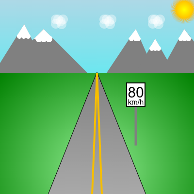
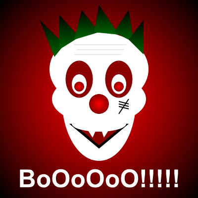
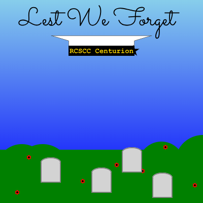
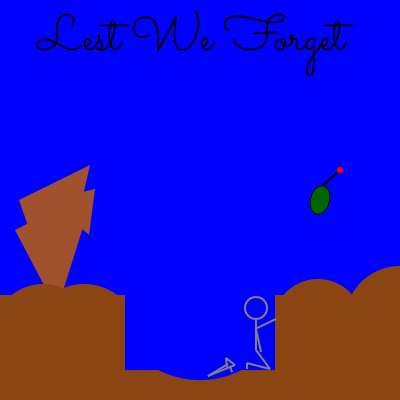
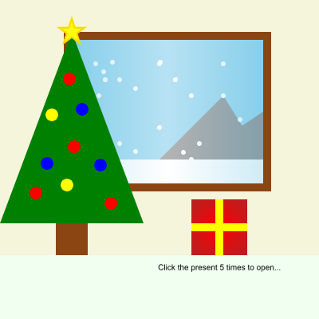
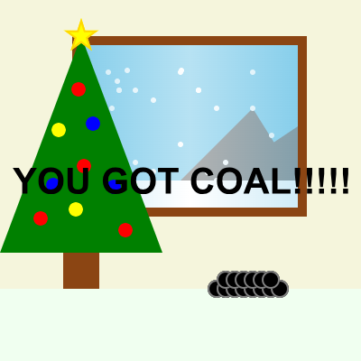

History of Computers Assignment
Gary Kildall
A Presentation about his life and significance to Computer Science.
Gary Kildall
A Presentation about his life and significance to Computer Science.
CMU Picture
After finishing Unit 1, we were tasked with making a picture, with this I created a perspective image of a road going off into the distance.
CMU Picture

For Truth and Reconciliation day we created a Indigenous inspired T-Shirt
CMU Picture
For halloween we had to make a CMU halloween themed mouse-event picture.
CMU Picture
For Rememberance day we were tasked with creating a rememberance day CMU picture. Our event shows the less we forget and peaceful background with graves, but once you click it shows the history of what happened.
CMU Picture
For christmas we created a CMU event, for ours we created a mouse-event that makes the user click 5 times to open their present and once they do the present opens and they get coal.
Python computer language

Another assignment tasked to us, was to create a poster on computer languages. For this project my group and I chose to do it on python and created an amazing poster all about python
Lab 1 - Calculator
A python code on three different activies that go through on some things we learnt on the course.
Lab 2 - Quiztime
A Quiz made by python. The code gives 5 quesions and then asks if you want to participate on a bonus question. When done the quiz it gives you the score and gives you a corisponding message based on your mark.